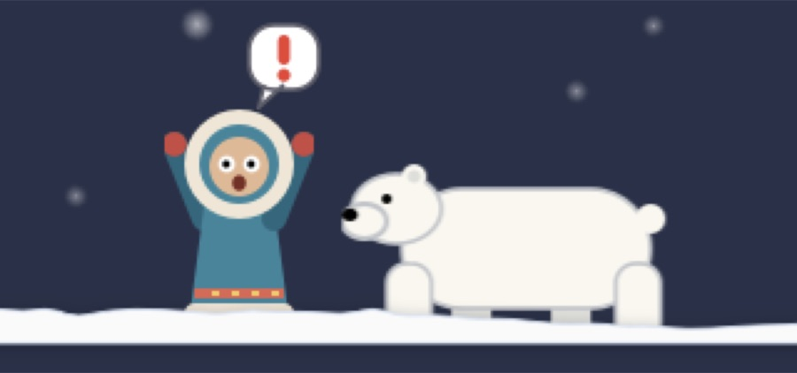
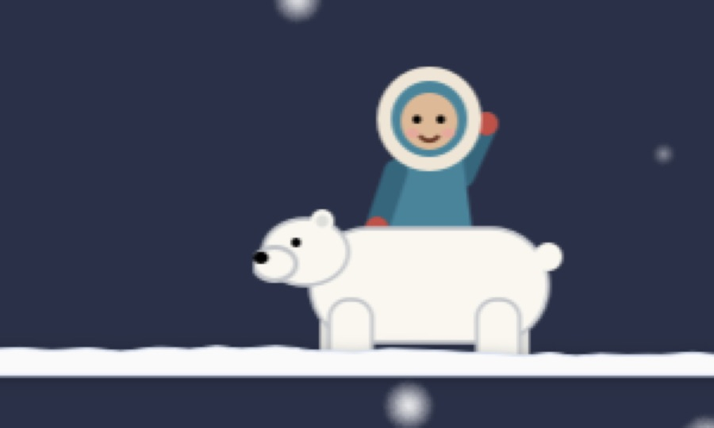
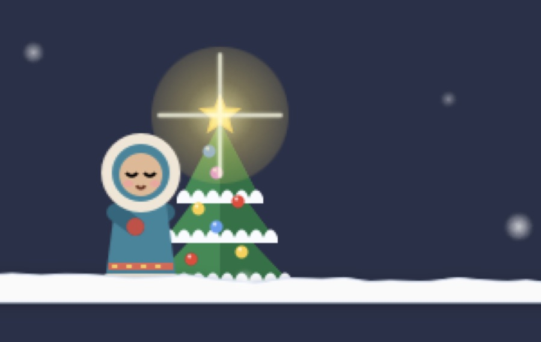

다운로드
이런 앱이에요



설치 방법
맥
- 받은 Snow-mac.dmg를 열고, Snow를 옆의 Applications 폴더로 끌어다 놓아요.
- 응용 프로그램 폴더에서 Snow를 실행해요.
- "확인되지 않은 개발자" 경고가 뜨면
- macOS 13, 14: 경고 창을 닫고, 응용 프로그램 폴더에서 Snow를 마우스 오른쪽 클릭 → 열기 → 열기
- macOS 15 이상: 경고 창을 닫고, 시스템 설정 → 개인정보 보호 및 보안 맨 아래의 그래도 열기
- "손쉬운 사용" 권한 요청이 뜨면 허용해 주세요. Dock 위에 눈이 쌓이고 장식이 나오려면 필요해요. (허용하지 않아도 눈은 내려요.)
- 메뉴바 오른쪽 위에 ❄️ 아이콘이 생기면 끝이에요.
윈도우
- 받은 Snow-windows.exe를 실행해요.
- "Windows의 PC 보호" 파란 창이 뜨면 추가 정보 → 실행을 눌러요.
개인이 만든 앱이라 유료 인증서로 서명하지 않아서 뜨는 경고예요. - 설치가 끝나면 작업 표시줄 오른쪽 아래에 ❄ 아이콘이 생겨요. 안 보이면 ^ 버튼을 눌러 보세요.
사용 방법
❄ 아이콘을 클릭하면 메뉴가 열려요.
| 메뉴 | 하는 일 |
|---|---|
| 눈 켜기 / 끄기 | 눈과 장식을 모두 켜고 꺼요. 잠깐 안 보이게 하고 싶을 때 쓰세요. |
| 눈 양 | 적게 / 보통 / 많이 |
| 바람 방향 | 없음 / 왼쪽 / 오른쪽 |
| Dock(작업 표시줄) 위에 눈 쌓이기 | 켜면 Dock이나 작업 표시줄 위에 눈이 조금씩 쌓여요. |
| 쌓인 눈 녹이기 | 쌓인 눈이 10초 동안 천천히 녹아요. |
| Dock(작업 표시줄) 위 장식 | 이글루, 알래스카 사람, 북극곰, 크리스마스 트리를 하나씩 켜고 꺼요. |
| 절전 모드 (윈도우) | 그리는 횟수와 작은 눈을 줄여서 CPU와 배터리를 아껴요. |
| 로그인 시 / Windows 시작 시 자동 실행 | 컴퓨터를 켤 때마다 자동으로 실행돼요. |
| 종료 | Snow를 꺼요. 다시 켜려면 응용 프로그램 폴더(맥)나 시작 메뉴(윈도우)에서 Snow를 실행하세요. |
알래스카 사람과 놀기
알래스카 사람을 마우스로 잡아서 옮길 수 있어요. 놓는 곳에 따라 하는 일이 달라요.
| 놓는 곳 | 하는 일 |
|---|---|
| 북극곰 위 | 곰을 타고 같이 돌아다녀요. |
| 이글루 위 | 이글루 안으로 쏙 들어가요. 잠시 뒤 나와요. |
| 트리 위 | 트리 꼭대기 별이 반짝이고, 두 손을 모아 소원을 빌어요. |
| 그 밖 | 그 자리에 내려와서 다시 걸어 다녀요. |
말풍선 시간표
| 시각 | 말 |
|---|---|
| 오전 9:00 | 파이팅 |
| 오전 10:30 | 힘내보자 |
| 오전 11:30 | 밥 먹을 시간! |
| 오후 2:00 | 잠온당.. |
| 오후 4:00 | 배고팡.. |
| 오후 5:00 | 집갈래ㅠㅠ |
| 오후 6:00 | 야르렁ㅋㅋ |
각 시각부터 1분 동안 보여요. 쌓인 눈을 5분 동안 그대로 두면 산타가 와서 치워 줘요.
삭제 방법
- 맥: ❄️ 메뉴에서 종료한 뒤, 응용 프로그램 폴더의 Snow를 휴지통으로 옮겨요.
- 윈도우: 설정 → 앱 → 설치된 앱 → Snow → 제거. 자동 실행 설정과 설정 파일도 함께 지워져요.
안심하고 쓰셔도 돼요
- 인터넷을 쓰지 않아요. 어떤 정보도 밖으로 보내지 않아요.
- 개인 정보를 모으지 않아요. 컴퓨터에 저장하는 건 눈 양 같은 설정뿐이에요.
- 맥의 "손쉬운 사용" 권한은 Dock이 화면 어디에 있는지 알아내는 데에만 써요. 다른 앱을 조작하거나 키보드 입력을 읽지 않아요. 필요 없으면 시스템 설정에서 언제든 끌 수 있어요.
- 마우스는 위치만 확인해요. 알래스카 사람을 잡을 수 있게 하려고요. 클릭이나 키 입력은 읽지 않아요.
- 설치할 때 뜨는 경고는 앱에 문제가 있어서가 아니라, 개인이 만든 앱이라 유료 인증을 받지 않아서 뜨는 거예요.
문의
궁금한 점이나 불편한 점은 GitHub 이슈로 알려 주세요.
GitHub 이슈: github.com/jcowwk/snow-release/issues (GitHub 계정이 필요하고, 남긴 글은 누구나 볼 수 있어요)